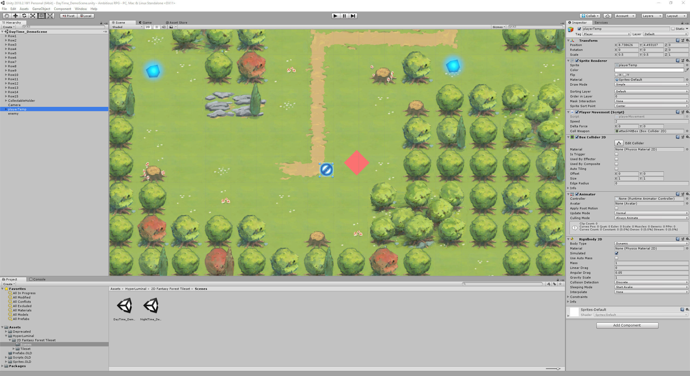
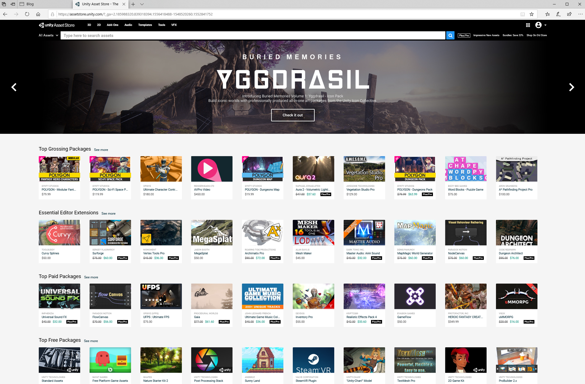

Click to go back
Unity 3D Game Engine
The Unity 3D game engine is a popular game engine that is widely used by independent game developers in recent years due to major improvements and updates.

| Price: | Free |
|---|---|
| Skill Level: | Beginner to Advanced |
| Source/Download: | Unity Homepage |
The Unity 3D game engine is a fairly well-tooled game engine that is able to develop most genres of games.
The game engine has a lot of pros to it as it is meant to be highly modifiable.
- Easily adaptable to any genre of game.
- The ability to develop games for a variety of platforms including PC, Xbox One, Android, IPhone, and Nintendo Switch.
- Easy to navigate User Interface.
- Includes c#, an easy to learn programming language.
- Built-in marketplace for creators to buy and download content.
User Interface
The User Interface is cleanly laid out and is easy to navigate. If the User Interface is not comfortable for the user, they can drag and place windows into their own sections of the screen if they do not like the current layout.
By default, the left pane is the hierachy where entities are placed into the scene of the game.
The right side is the Inspector where settings of a certain entity can be modified. For this instance, the picture above is the player entity's settings.
The bottom tabs are Project and Console. Project is the collection of levels, scripts, audio, graphics, and entities that are in the project.
The Console is usually a blank space that will show errors and messages depending on what is happening in the game.
The Unity Asset Store
The Unity Asset Store is the built-in marketplace where game developers can buy many different kinds of assets including scripts, graphics, and models.
The Unity Asset Store can be accessed via two ways. It can be accessed by the "Asset Store" tab on the center viewport in the Unity 3D game engine application. It can also be accessed via Unity's website.
Opinion
My opinion about the game engine used to be mixed prior to the major update that the engine has had since early 2018.
Prior to 2018, Unity 3D had a stigma attached to it as independent game developers would over-saturate the market with games that all shared the same assets across all of them. These tended to be referred to as "asset flips" or "asset store games". The lack of post-processing effects and graphical capabilities also did not help the public opinion of it.
After 2018, my opinion changed to be more positive as the developers of the engine started to focus on development of post-processing, quality, and functionality. Individuals began to also develop more advanced plugins and assets for the asset store allowing the other developers to develop more advanced games.